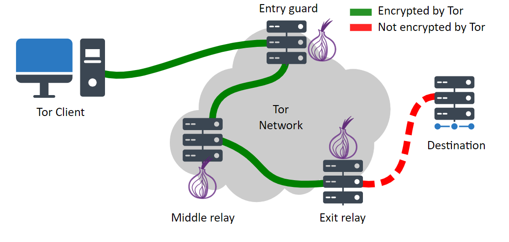

Os websites na rede Tor desempenham um papel crucial em um mundo onde a privacidade e a liberdade de expressão enfrentam desafios crescentes, oferecendo, quando utilizados corretamente, um meio de navegação segura e acesso à informação não censurada.
Conceito:
O Tor (The Onion Router) é um software livre e uma rede aberta que possibilita a navegação anônima, visto que mascara o endereço IP dos usuários ao redirecionar o tráfego por uma rede global de voluntários (nós) antes de alcançar o destino final, além de utilizar múltiplas camadas de criptografia. Além disso, permite o acesso a serviços ocultos (.onion), que são sites inacessíveis pela internet convencional e fazem parte da rede Tor.
Atenção: A fins de segurança, aconselham-se realizar as ações citadas a partir de uma VPS isolada.
Para a criação de sites na rede Tor, será usado:
- Um servidor web (Apache);
- O sistema operacional Ubuntu (Linux);
- O software Tor;
- O navegador Tor;
- Um conteúdo estático para exemplificação.
Instalação do Tor Browser
A princípio, é preciso instalar o Tor Browser, o navegador que possibilita o acesso aos serviços provenientes da rede Onion vinculado ao Tor Project. Em https://www.torproject.org/download/, baixe o Tor Browser. Em seguida, descompacte o arquvivo para sua utilização futura:
tar -xvf tor-browser-linux-x86_64-14.0.3.tar.xz
Instalação do Tor:
Em seguida, deve-se instalar o Tor. Portanto, com permissões administrativas, utilize o comando abaixo:
sudo apt install tor -y
Após a instalação, verifique se o serviço está ativo:
systemctl status tor
Configurando o Serviço Oculto:
O próximo passo seria configurar o software Tor, permitindo o acesso ao website. Para isso, vá no arquivo de configurações e edite-o:
sudo vim /etc/tor/torrc
Em seguida, encontre as linhas a seguir e descomente-as:
HiddenServiceDir /var/lib/tor/hidden_service/
HiddenServicePort 80 127.0.0.1:8080
Por fim, com o intuito de aplicar as mudanças, reinicie o serviço Tor:
sudo systemctl restart tor
Após o reiniciamento, o endereço onion referente ao site criado estará em "/var/lib/tor/hidden_service/hostname". Portanto, é possível vê-lo a partir de:
cat /var/lib/tor/hidden_service/hostname
Configurando o servidor Web:
Por último, necessita-se a configuração do servidor web. A fins de exemplo, o Apache foi o escolhido.
sudo apt install apache2
Em /var/www/html, insira o site estático
cd /var/www/html
vim index.html
Com isso, ao colocar a URL obtda em var/lib/tor/hidden_service/hostname no tor browser, o site estático inserido anteriormente carregará. Concluindo assim, o processo de criação de site estático no Tor.

Assim, foi-se criado um website na rede Onion vinculado ao Tor Project, possibilitando a customização do site perante a vontade do usuário.